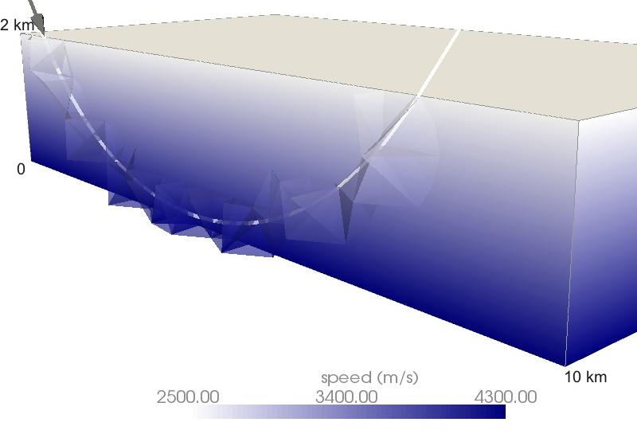
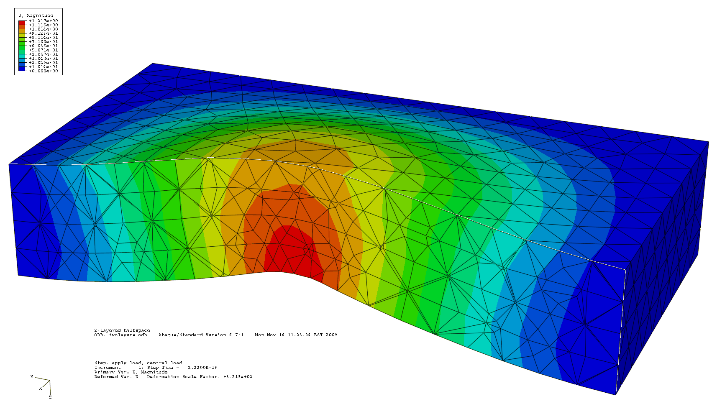
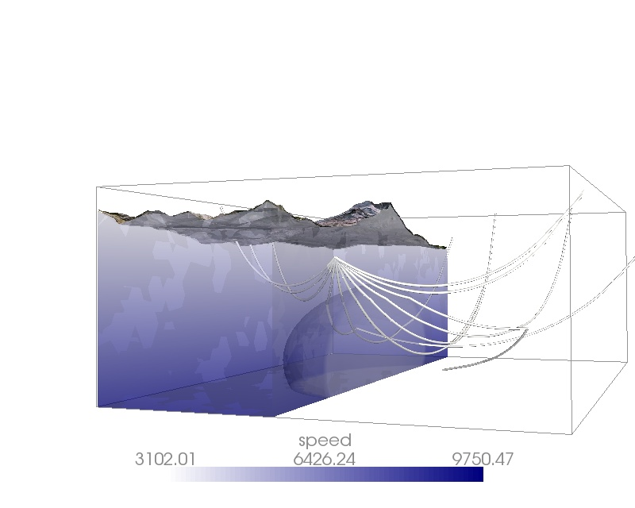
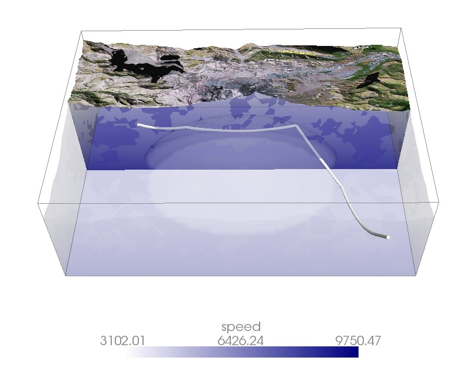
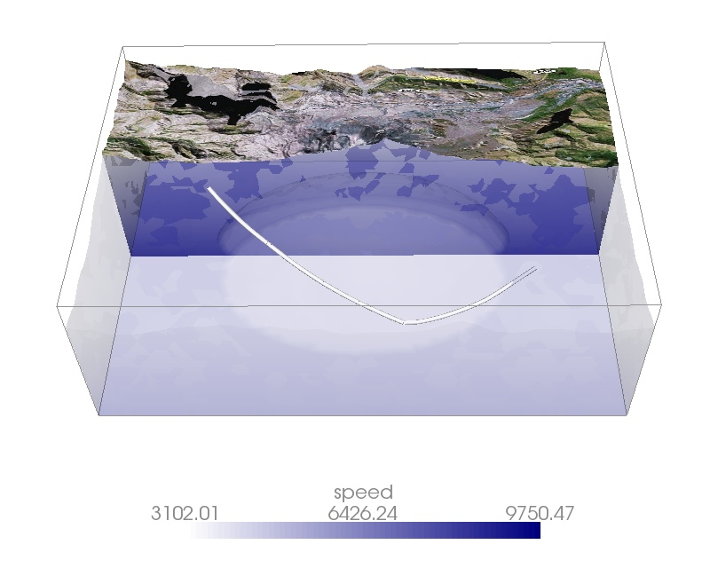

Ray tracing
Rays are quite popular in seismology. The concept comes from optics and
is very intuitive if you think of light as a particle, i.e. in terms of photons.
Rays would be the trajectories such photons would take on their fly by.
For seismology, you can think of it as the trajectory a seismic signal is taking through
the Earth.

Studying these trajectories leads to better knowledge of the subsurface. The only
problem you are faced with is to calculate these trajectories for your
complex geologic structures. That's where I spent some time on, implementing
a numerical raytracing algorithm for isotropic media discretized by finite elements.
This algorithm, which is based on tetrahedral elements, combines the flexibility
of finite-element modeling and meshing with the calculation of rays through a three-dimensional speed
field, given a direction of a ray at an initial point.
The funny thing with finite-elements is that you can also squeeze and stretch them,
thus deforming your initial model as you like.
Modeling static deformations for elastic, viscoelastic or plastic media
has become an easy task using
some of the existing finite-element modeling tools such as e.g.
ABAQUS.

The effect of such deformations on the trajectories might be very small, but
we thought to give it a try nevertheless and implement an algorithm which at least
can deal with it. If this package becomes useful for seismic studies is, well, beyond
of my current scope. But if you would be interested in let's say rays through a
magma chamber under Mount St.Helens, and deform it, in principle, you could at least calculate such
signal trajectories.




references:
Epstein, M., D. Peter and M.A. Slawinski, 2012. Combining ray-tracing techniques and finite-element modelling in deformable media , QJMAM, 65 (1), 87-112..